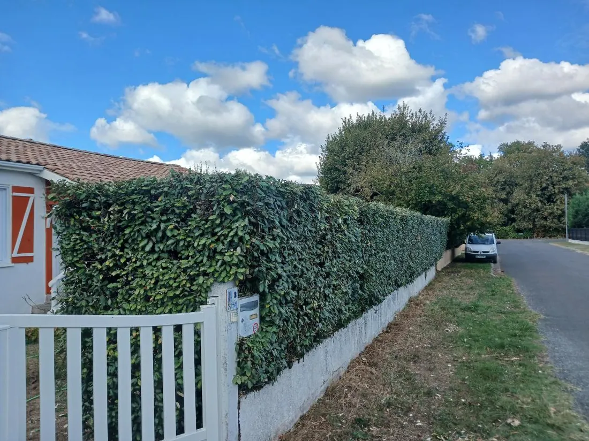
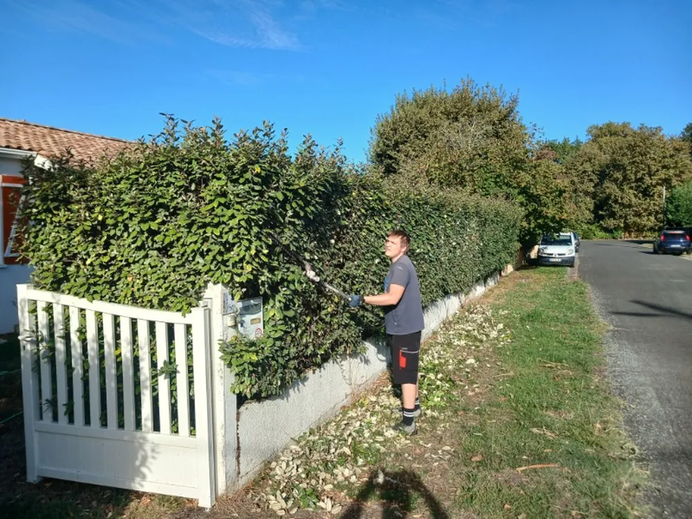
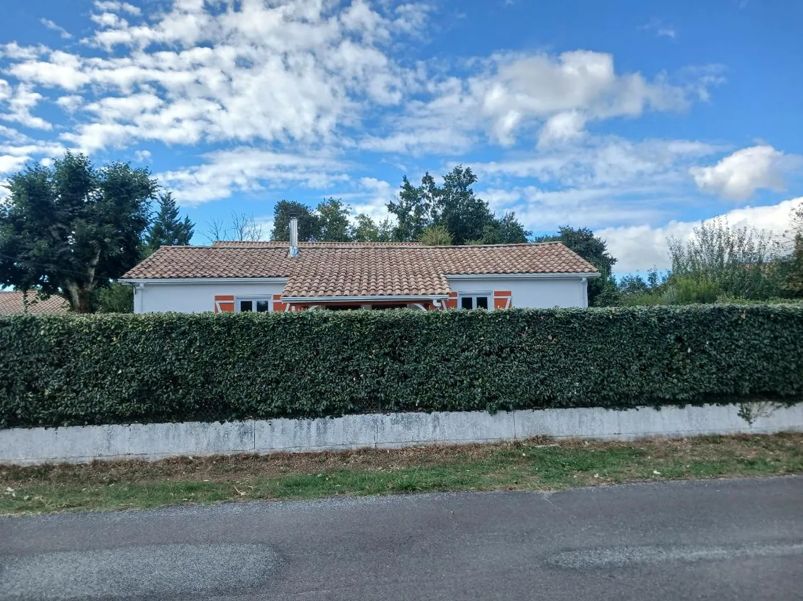

Une haie de clôture remise d'aplomb en bordure de voie
La haie avait pris de la hauteur et débordait du muret sur la chaussée. Le portail disparaissait derrière le feuillage. Elle a été reprise sur toute sa longueur, en hauteur et sur les deux faces.
Le même angle, avant et après la coupe
Les deux vues sont prises de part et d'autre du portail, à quelques heures d'intervalle. Le muret et le portail blanc servent de repère.

Avant Après
Après
Ce qui a été fait
- Commune, Andernos-les-Bains, sur le Bassin d'Arcachon
- Période, septembre 2026
- Haie de clôture plantée sur muret, en bordure de voie
- Motif, une haie devenue trop haute qui débordait sur la chaussée
- Reprise en hauteur et sur les deux faces, dans le même passage
- Durée du chantier, une matinée
- Coupes chargées et emportées, rien laissé sur place
- Longueur de haie [[À CONFIRMER : linéaire de haie taillé]]
- Essence [[À CONFIRMER : essence de la haie, à ne pas deviner d'après la photo]]
Une haie de bord de route se taille en trois passes
Le sommet est repris en premier, au cordeau, pour fixer la hauteur sur toute la longueur. C'est cette ligne qui donne l'impression de propreté, bien plus que la coupe des faces.
Les deux faces suivent, la base laissée légèrement plus large que le sommet. Cette forme en tronc de pyramide laisse la lumière atteindre le bas des branches. Une haie taillée bien droite se dégarnit par le pied au bout de quelques années.
La face côté route demande une attention particulière. Une haie qui déborde sur la voie publique gêne la visibilité et le passage, et son entretien revient au riverain. Les règles précises varient d'une commune à l'autre, votre mairie les précise.
Les coupes ont été chargées et emportées le jour même. Sur une haie de cette longueur, le volume de rémanents dépasse largement ce qu'une déchetterie accepte en apport de particulier.


Ce que l'on nous demande sur les haies de clôture
L'entretien d'une haie plantée sur un terrain privé revient au riverain, y compris pour la face qui donne sur la voie publique. Les règles de hauteur et de recul varient selon les communes, votre mairie les précise. Nous intervenons sur les deux faces dans le même passage.
La fin de l'été et le début de l'automne conviennent bien, la pousse est terminée et la forme tient jusqu'au printemps. La taille est déconseillée en pleine période de nidification, entre le printemps et le milieu de l'été.
Oui. L'entreprise part de Mérignac et dessert Bordeaux Métropole ainsi que le Bassin d'Arcachon, dont Andernos-les-Bains. Le déplacement est étudié au moment du devis, selon la nature du chantier et le calendrier.